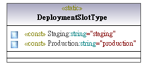

| diagram |  | ||||||||||||||||||||||||||||||||
| owner | WRScalingModule | ||||||||||||||||||||||||||||||||
| properties |
| ||||||||||||||||||||||||||||||||
| ownedMember | Production Staging | ||||||||||||||||||||||||||||||||
| target of relation |
| ||||||||||||||||||||||||||||||||
| shown on diagram | Content of WorkerController and all subpackages Content of WRScalingModule |
| owner | DeploymentSlotType | ||||||||||||||||||||||||||||||||||||||||
| properties |
|
| owner | DeploymentSlotType | ||||||||||||||||||||||||||||||||||||||||
| properties |
|